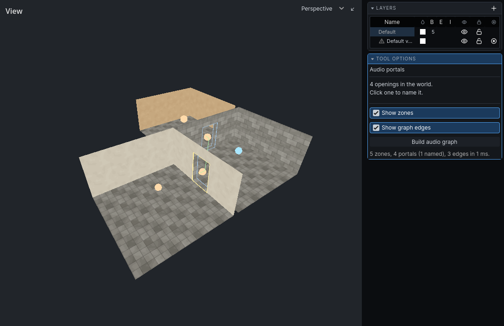
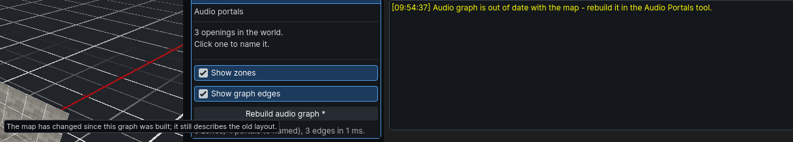

The audio graph
The audio graph is the map of routes sound can take: the zones, the openings between them and the way from each opening to the next. It is built once, from the level as it stands, and saved in the map.
A map with no graph is not built one as it loads: its sounds go in straight lines, through walls, until you build one here, and the message log says so when you open the map. Building it here is how that graph is saved with the map - and it is the only way to change what the build read, since what you author about a room or an opening only reaches sound through a build.
Building it
- Click Audio Portals on the toolbar, or choose it from the Tools menu.
- In the panel, click Build audio graph.
- Read the result under the button: zones, portals, how many are named, edges.
- Save the map.
The result may also say:
- N openings skipped: room excluded. One side of each is a room with Exclude from graph on.
- N openings are internal to one zone. Each joins two rooms that are one zone anyway, for example through an overlap elsewhere.
Variants
Each variant is a separate world with its own graph. Build audio graph builds the variant you are looking at. When the map has more than one variant, Build for every variant appears below it and builds them all.
When the graph is out of date
An edit after the build leaves the graph describing the old level. The graph still works, but sound follows the old layout. A graph built as the map loaded is not out of date, because it was built from the map in front of you - so the first thing you author about a room dates it, and the button asks to be pressed.
These edits date it:
- moving, resizing, adding or deleting an air brush
- changing any value in an air brush's Audio section
- changing what can see the sky
- adding or removing a water fill
- naming an opening, or changing its Closed dB or Occlusion
- changing an air brush's textures
These do not: detail brushwork, and entities of any kind. Dressing a room never dates its acoustics.
The editor tells you in three places:
- The build button reads
Rebuild audio graph *. Its tooltip says the map has changed since the build. - The message log warns once, when the tool is open and an edit dates the graph.
- The game warns when it loads a map whose graph is out of date.
Rebuild, then save.
The Audio Portals tool
The tool draws the graph over the 3D view.
| Drawn | Meaning |
|---|---|
| yellow outline, centre marker | a named opening |
| dim blue outline | an unnamed opening |
| white outline | the selected opening |
| orange sphere | an Interior zone |
| blue sphere | an Exterior zone |
| green sphere | a Semi-exterior zone |
| bright green line | an edge between two openings that can see each other |
| dark green line | an edge that bends round a corner |
One sphere per zone. An L-shaped room made of two overlapping air brushes shows one sphere; if it shows two, the brushes abut rather than overlap.
Turn the spheres and lines off with Show zones and Show graph edges in the panel.
Openings are also outlined in the 2D views. Spheres and edges show the graph as last built, so they are missing until the first build and may be out of date after an edit.


The Acoustics overlay
The Cells dropdown in each 2D view has Acoustics. It colours each room on the 2D floorplan by its zone type. It reads the brush settings directly, so it is current without a build. See Outdoors for the colours.
Listening in the editor
While the editor is up, the level is heard from the 3D view's camera: Audio Listener, in the 3D view's View dropdown, is on. Simulate an entity, or the whole level, and fly round it to hear its sounds come through the openings as a player would. Turn Ears off to hear it from the game's camera, wherever it was left. The setting is remembered.